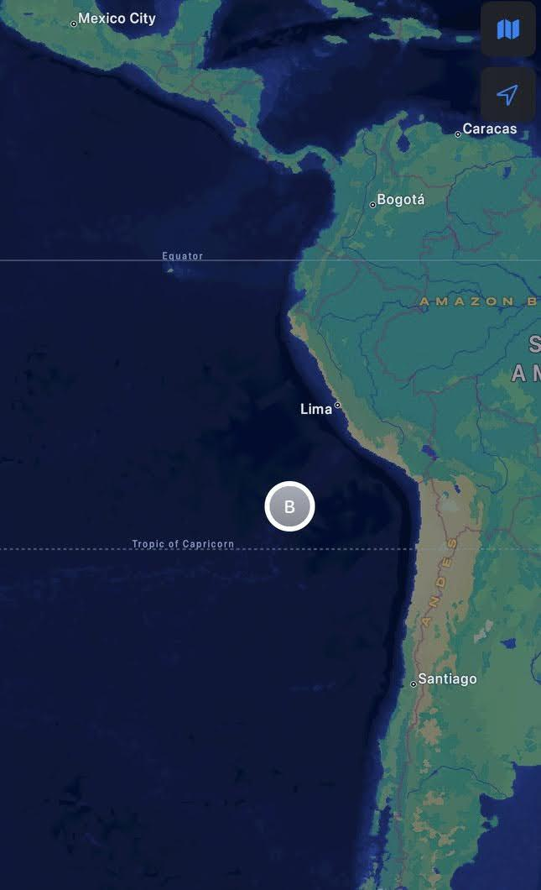
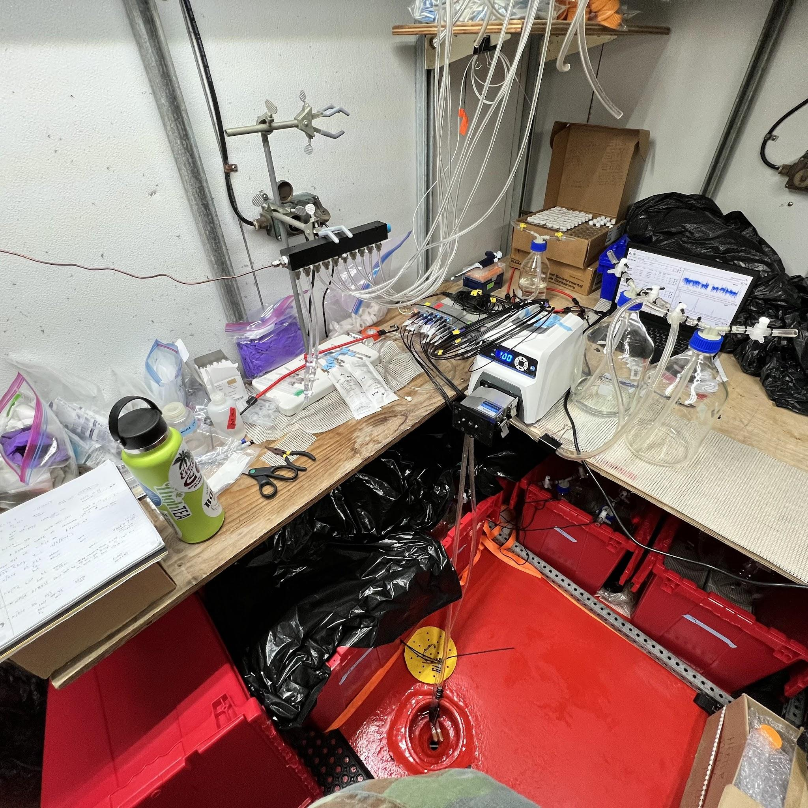
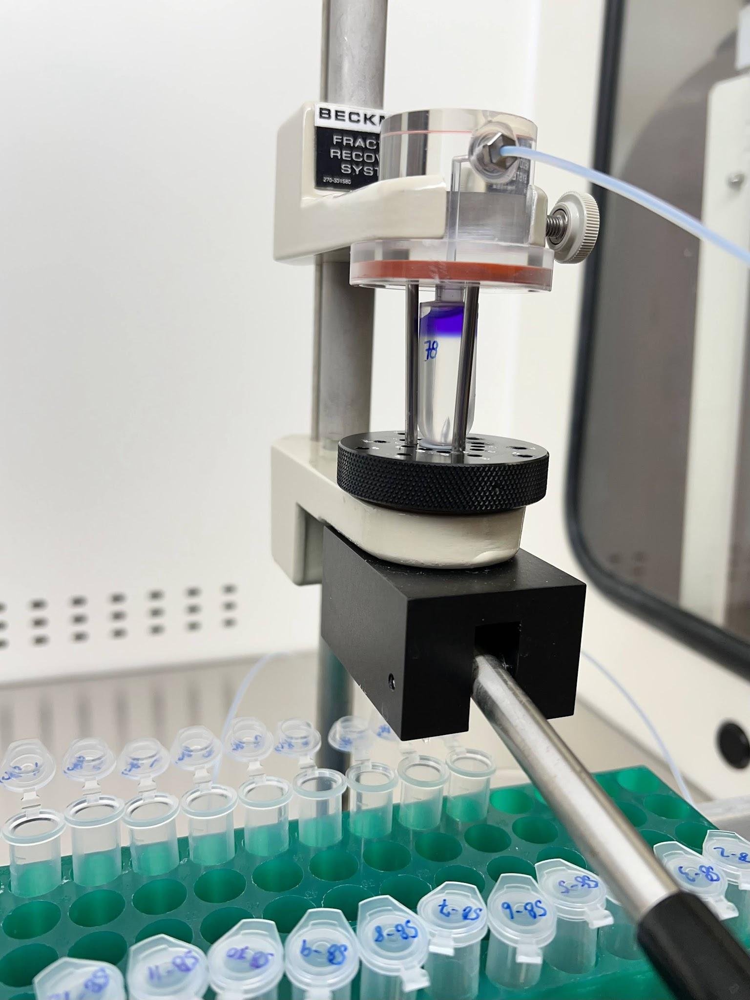
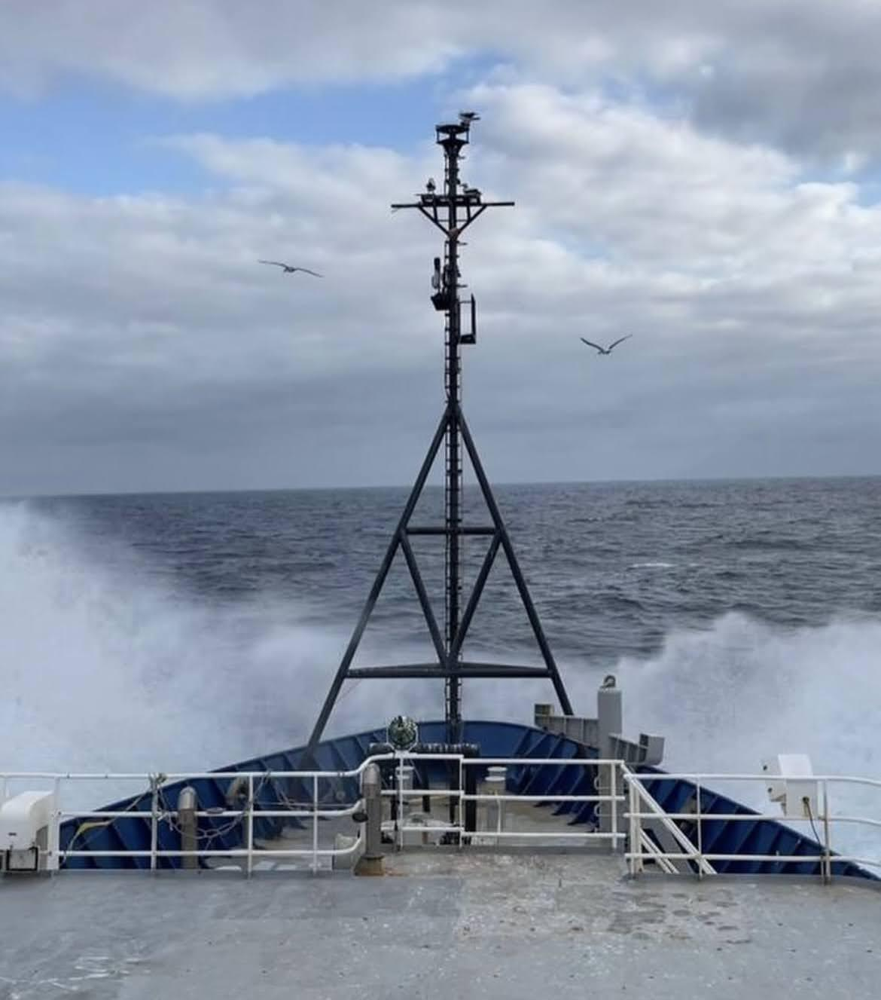
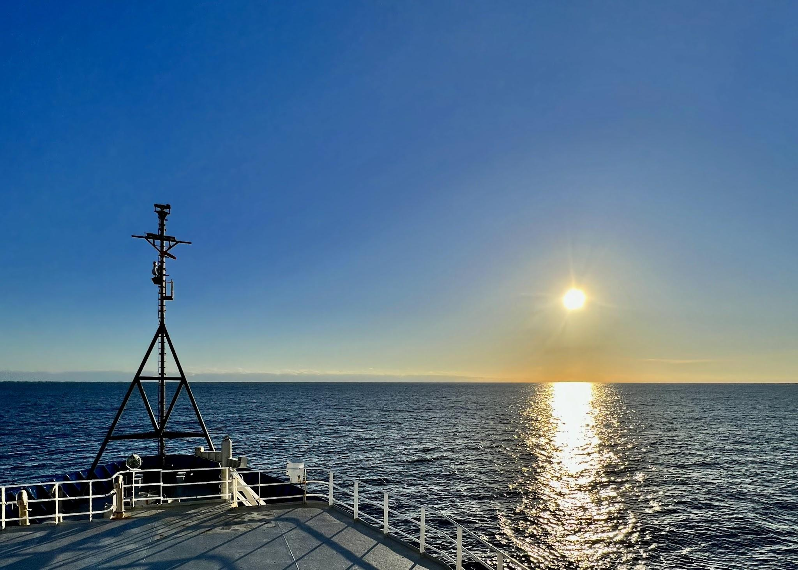
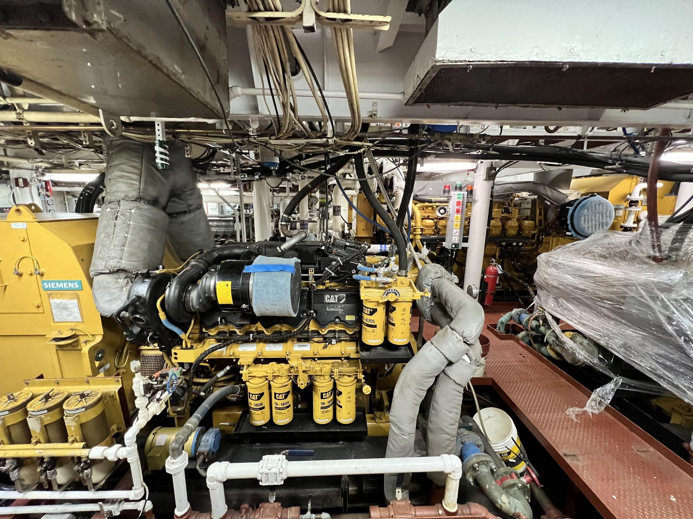
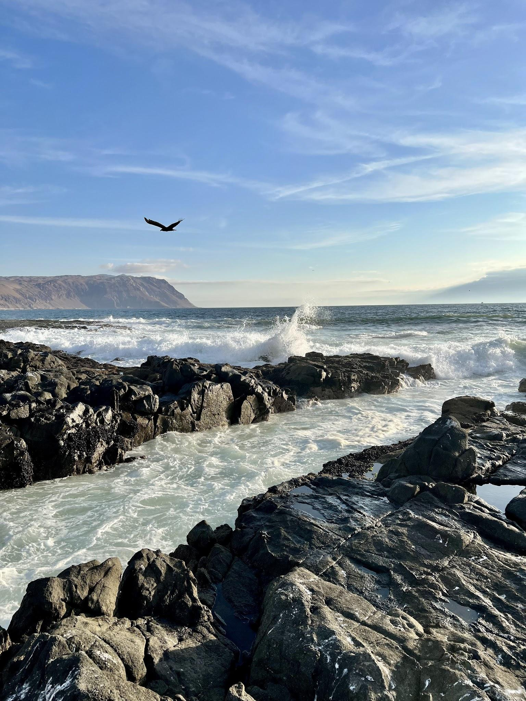

University of South Carolina
Peng Lab in Marine Microbial Ecology
ETSP Cruise: Stable Isotope Probing at Sea
November - December, 2023 | Birch Lazo-Murphy

The ETSP was my first research cruise. For this cruise we planned to do a stable isotope probing experiment. The goal of this experiment is to track the flow of carbon as it is consumed by microbial heterotrophs. We do so by "feeding" a 13-C labeled diatom to heterotrophs during a 24-hour incubation in a cold room. That 13-C in the diatoms gets passed up the food chain and becomes incorporated into the microbes that consumed the diatoms! Once consumed we extract the DNA of all microorganisms in that incubation. We can then use physical and bioinformatic approaches to see the resulting DNA of the organisms that consumed the diatom, helping us to track turnover of organic carbon.

Figure 1: One of our more pelagic stations.
At one of our more pelagic stations, we were approximately 1,000 km (~650 miles) offshore. Being that far from land made the scale of the eastern tropical South Pacific feel very real. It also mattered scientifically: offshore stations gave us a chance to compare microbial processes in open-ocean water with the more coastal stations where oxygen, nutrients, and biological activity can look very different. On a cruise like this, the map becomes more than a route. It is also a reminder that each station represents a slightly different microbial world.
Figure 2: CTD rosette used for sample collection.
Sample collection involved the use of a CTD rosette, the device shown here. The CTD can go to the seafloor and collect water at various depths along the way. This CTD, along with additional hardware, captured temperature, dissolved oxygen, light, and chlorophyll A concentrations. Those physical and biological parameters were important because they helped us interpret the microbial activity we measured later. A bottle from 20 meters and a bottle from deep in the oxygen minimum zone may both look like seawater, but they come from very different environments.
For our samples, we wanted the water to remain free of oxygen. That was one of the biggest practical challenges of the cruise. To do this, we used gas-tight stopcocks and followed a specific methodology to keep oxygen intrusion minimal while transferring water from the CTD bottles. We also used an oxygen sensor to monitor this throughout the cruise, and it worked fairly well for most casts. It added extra steps to sample collection, but those details were essential for studying low-oxygen microbial processes honestly.

Figure 3: Incubations in the cold, dark room.
Once samples were collected, we brought them to the walk-in fridge. We also placed the bottles in dark plastic bags in bins to reduce light. The cold, dark room replicated two of the major conditions from the depths where we collected samples: low temperature and darkness. Technically, it was not pressurized like the deep ocean, but recreating temperature and light conditions still helped keep the incubations closer to their natural environment. That balance between realism and what is physically possible on a ship is a big part of field-based experimental design.

Figure 4: DNA fractionation for stable isotope probing.
The latter portions of this experiment are accomplished in a lab. Here, you can see the fractionation portion of stable isotope probing. This stage comes after the sample spends three days in a centrifuge, which separates the "heavy" DNA, meaning the 13-C labeled DNA, from the "light" DNA. That separation is the key step that lets us connect the labeled diatom carbon to the microorganisms that actually consumed it. The cruise gave us the water and the incubations; the lab work lets us turn those samples into evidence about who was using that carbon.
Other Parts of the Cruise
Of course, a first research cruise is not only the experiment. It is also learning how to work while the floor moves, how to plan around weather, and how much coordination happens behind every successful sample. Some days felt calm and almost routine; others made even basic tasks feel like a balancing act.

Figure 5: Choppy water during the cruise.
We had some days where waters were much more choppy. Those days made lab work feel more physical, from carrying bottles to keeping supplies secure. They were also a good reminder that fieldwork at sea depends on both careful planning and whatever conditions the ocean gives you.

Figure 6: A perfectly still day offshore.
We also had some perfectly still days. The contrast between rough water and glassy calm was striking, and the quieter days gave us moments to appreciate the open ocean beyond the sampling schedule. After long stretches of sample processing, those moments helped the scale and beauty of the place sink in.

Figure 7: A huge engine room.
The ship itself was impressive too. Seeing the engine room below deck made the vessel feel like its own floating laboratory and small city, with an enormous amount of engineering quietly supporting every cast, incubation, and sample we collected. It is easy to focus only on the science, but none of it happens without the crew and the infrastructure keeping the ship running.

Figure 8: The view when we made it back to Chile.
After weeks offshore, seeing land again was a satisfying finish to my first cruise and to a demanding experiment that started on deck, continued in the cold room, and would keep going back in the lab. The ETSP cruise was a crash course in oceanographic fieldwork, microbial ecology, and the patience required to connect shipboard sampling to the molecular data that come later.
We are grateful for the opportunity to participate in this research cruise, led by Chief Scientist Bess Ward and supported by the National Science Foundation.